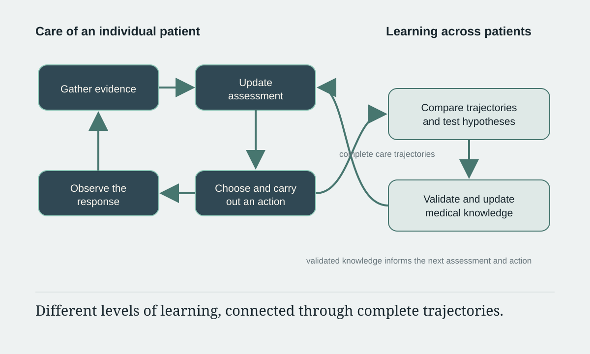

Looking at a diagram of the scientific discovery loop—propose an experiment, run it, evaluate the result—I started thinking about a similar pattern in medicine.
Across specialties, we collect information, interpret it, choose an action, and observe what happens. Those observations then inform the next decision.
Gather information → Update an assessment → Act → Learn from feedback.
The evidence may come from symptoms, laboratory tests, images, or treatment responses. The questions keep recurring.
A recurring clinical loop
| Step | Question | What it contributes |
|---|---|---|
| Observe | What evidence do we have? | Symptoms, history, examination findings, and test results |
| Infer | What could explain the evidence? | A working assessment, alternative explanations, and uncertainty |
| Act | What should happen next? | Further questions, testing, observation, referral, or treatment |
| Evaluate and update | What happened, and does it change our judgment? | A revised assessment and the next decision |
There are established ideas behind this view. The National Academies describes diagnosis as an iterative process of gathering information, interpreting it, and updating a working diagnosis.1 A partially observable Markov decision process, or POMDP, provides a mathematical framework for choosing actions when the underlying state cannot be observed directly.2
Reasoning under uncertainty
I find this a useful way to think about medicine. We have incomplete observations of a patient’s condition, and our actions can change both that condition and what we know about it. I would map the concepts as follows.
| Concept | Interpretation in patient care |
|---|---|
| Latent state | The patient’s underlying condition, which we can only partly observe |
| Observation | Symptoms, examination findings, images, laboratory results, and history |
| Belief state | Our current assessment of possible patient states and the uncertainty around them |
| Action | Asking, testing, observing, referring, treating, or adjusting treatment |
| Policy | A rule for choosing the next action from the current assessment |
| Utility | Patient benefit considered alongside harm, burden, and preferences |
This is where I see an opportunity for AI. Evidence, assessments, actions, and outcomes need to remain connected throughout care. A new scan should update our understanding of the same patient. A decision should retain its rationale. What actually happens afterward should inform the next decision.
My hypothesis is that some abilities within this process could transfer across medical tasks: recognizing missing information, choosing useful observations, revising a hypothesis, and deciding when to act. Disease mechanisms and treatment options still require specific knowledge. The question is how much of the decision process can be shared.
From one patient to learning across patients
At a larger scale, the Learning Health System connects experience from care with knowledge that improves subsequent care.3 I think of this as a connection between two levels of learning.

The two levels update different things.
| Level | Main question | What gets updated |
|---|---|---|
| Patient-level clinical loop | What is happening to this patient, and what should we do next? | The patient’s assessment and care plan |
| Population-level discovery loop | Which findings generalize, and what works for whom? | Medical knowledge, models, and decision strategies |
A patient’s response can help revise that patient’s assessment. Establishing a general treatment effect requires appropriate comparisons and validation. Connecting the two levels means making those additional steps explicit.
Three questions worth pursuing
I want to start with one patient’s care journey, make these connections explicit, and then examine what can be learned across patients.
References
- National Academies of Sciences, Engineering, and Medicine. Improving Diagnosis in Health Care. 2015. Chapter 2: The Diagnostic Process.
- Kaelbling LP, Littman ML, Cassandra AR. Planning and acting in partially observable stochastic domains. Artificial Intelligence. 1998;101:99–134.
- National Academy of Medicine. Learning Health System.